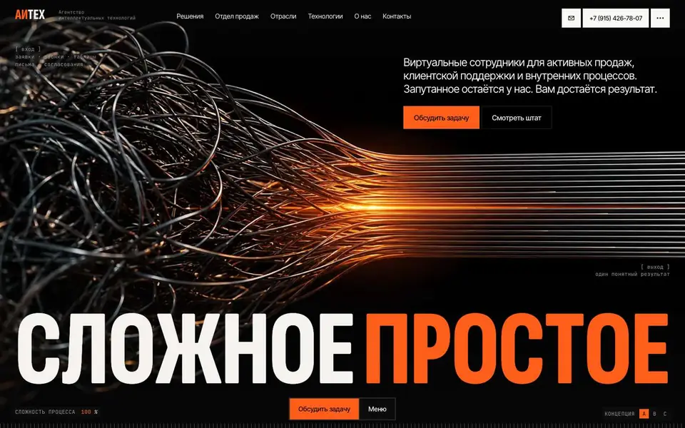
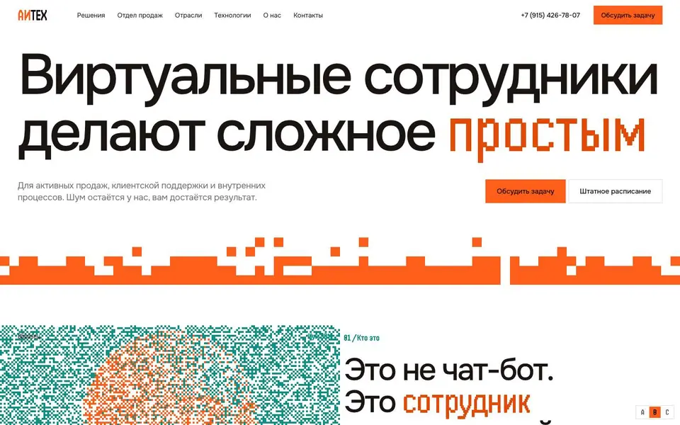
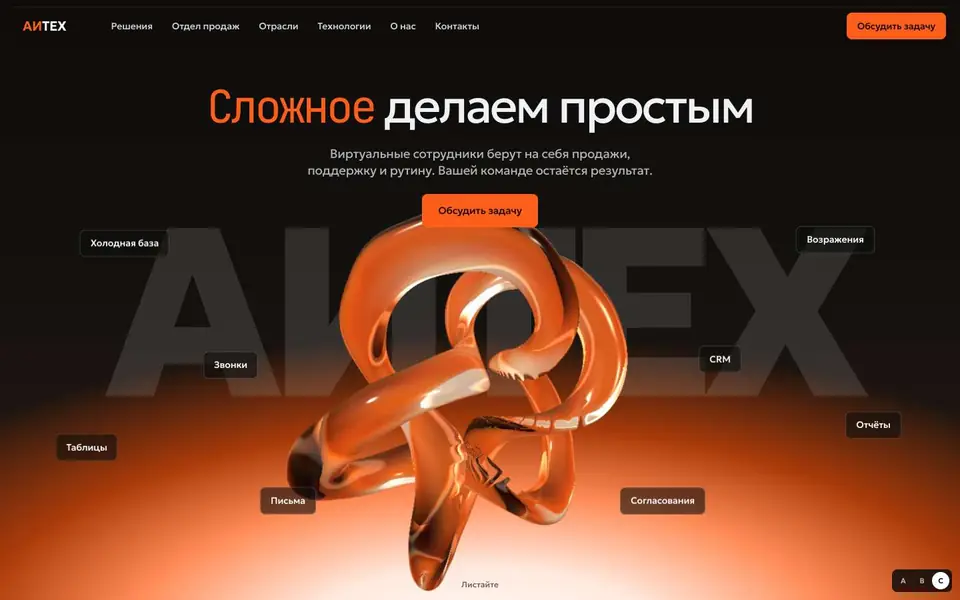

Отвечает на главный вопрос
Вкладки для самозанятых, ИП и микробизнеса, малого и среднего бизнеса, B2B показывают задачу и изменения в цифрах. Заказчик находит себя за один клик.
Метафора одна: сложное становится простым. Фирменный оранжевый один, подача разная. Все три версии облегчены под размещение на Тильде.

РекомендуемТёмная комната, оранжевый и холодный голубой. Прямые линии из первого экрана идут через всю страницу и становятся графиком результата.
Открыть →
Белый лист, живой оранжевый и персиковый. Самая простая и лёгкая версия: без библиотек, пиксельный портрет сотрудника идёт вторым блоком.
Открыть →
Оранжевое стекло, строгий гротеск и моноширинный акцент. Живой узел тает в шар, а задачи растворяются в нём.
Открыть →Рекомендация
Её образ объясняет продукт без слов: запутанный процесс входит, ровный результат выходит. Кроме того, только в ней заказчик сразу видит, что изменится именно в его бизнесе.
Вкладки для самозанятых, ИП и микробизнеса, малого и среднего бизнеса, B2B показывают задачу и изменения в цифрах. Заказчик находит себя за один клик.
Линии первого экрана не исчезают: они ведут к сотруднику, проходят сквозь отрасли, становятся графиком и в финале сходятся в одну.
Каждой должности и отрасли соответствует своя 3D-миниатюра в едином стиле. Каталог растёт как штат компании и не выглядит магазином.
Клубок и ровные линии, оранжевый и холодный голубой, крупное слово «Простое» легко узнать в баннере, презентации и соцсетях.
Перед запуском нужны реальные цифры внедрений: сейчас в блоке результатов условные примеры. Первый экран, ленту и линии на Тильде придётся делать кодом.
Если важнее всего срок, бюджет и возможность менять страницу без разработчика. Это самая лёгкая и самая простая в переносе версия.
Если главная задача сайта в имидже и сильном первом впечатлении. Блок результатов в этом случае стоит перенести из A.
Сравнение
| Критерий | A. СигналРекомендуем | B. Пиксель | C. Лёгкость |
|---|---|---|---|
| Первое впечатление | Сильное, инженерное | Спокойное, чистое | Самое яркое: живой стеклянный узел |
| Что я получу | Графики по типам заказчиков | Карточка должности и общие цифры | Карта «было и стало», общие цифры |
| Полуробот | 3D-бюст, к которому сходятся линии задач | Пиксельный портрет, проявляется из шума | Стеклянный бюст, он же в чате |
| Рост до большого сайта | Миниатюра на каждую должность и отрасль | Самый быстрый: таблицы и текст | Стеклянный объект на каждую должность |
| Вес страницы | 686 КБ | 104 КБ | 687 КБ |
| Перенос на Тильду | Средняя сложность | Низкая сложность | Средняя, 3D-узел сложнее |
| Правки без разработчика | Тексты и обычные блоки | Почти всё | Тексты и обычные блоки |
| Главный риск | Без реальных цифр блок результатов теряет силу | Может показаться слишком простой для имиджа | На слабых устройствах 3D придётся заменить картинкой |
Рынок
Мы посмотрели главные страницы SalesAgent, Swift Agents и «Реплики». У этих компаний много общего в подаче, и именно здесь у АИТЕХ есть свободное место.
На просмотренных сайтах главный образ это окно чата или фото девушки в гарнитуре. Полуробот сразу говорит о продукте честно: общается как человек, работает как система.
В интерфейсах у них ведут тёмно-фиолетовый, синий и лаймовый. Фирменный оранжевый АИТЕХ не совпадает ни с одним из них и работает на узнаваемость.
На этих главных страницах мы не нашли отдельного обращения к самозанятым, ИП и микробизнесу. По данным Yandex AI Studio, 86% пользователей ИИ-агентов на её платформе это малый и средний бизнес.
В обзоре Business FM цифры роста исходят от самих компаний, независимых данных там нет. У АИТЕХ есть проверяемый факт: запись № 32900 в Реестре российского ПО. На трёх просмотренных главных страницах упоминания реестра мы не нашли.
Это наблюдения по трём сайтам, близким к АИТЕХ по подаче, на 31 октября 2026 года. Более широкая картина в матрице ниже: например, Just AI тоже упоминает реестр и малый бизнес. Гарантировать результат они не могут: рост заявок покажут запуск и аналитика. Подача даёт заявке шанс, а окончательно убеждают реальные кейсы.
Конкуренты
| Компания | Голосовые агенты | Мессенджеры | Подача как сотрудника | Разработка под задачу | Запуск своими силами | Малый бизнес | Корпорации | Реестр ПО | Своя инфраструктура |
|---|---|---|---|---|---|---|---|---|---|
| АИТЕХ | |||||||||
| SalesAgent | |||||||||
| Swift Agents | |||||||||
| «Реплика» | |||||||||
| Yandex AI Studio | |||||||||
| Just AI | |||||||||
| Neuro.net | |||||||||
| Zvonobot | |||||||||
| Do Digital |
Указано на главной страницеНе нашли на главной: это не значит, что возможности нетЗаложено в концепции A, нужно подтвердить
Вывод: сами возможности на рынке есть у многих. Среди просмотренных компаний только АИТЕХ сочетает подачу как сотрудника, разработку под задачу, запись в реестре и размещение в своей инфраструктуре. Отдельно к самозанятым и ИП не обращается никто из восьми.
Карта это наша экспертная оценка по текстам главных страниц, а матрица отражает то, что на них указано на 31 октября 2026 года. Перед показом клиенту данные об АИТЕХ стоит сверить с компанией.
Описание концепций
Заказчик приходит не за технологией, а за изменением в цифрах, и здесь это главный сюжет. Страница говорит на языке результата с разными типами бизнеса.
На презентации покажите переход клубка в линии, затем вкладки результатов. Для рекламы подойдёт пара «клубок и ровные линии»: её легко повторить в баннере, ролике и коммерческом предложении.
Скорость и ясность. Страница весит около 100 КБ и открывается быстро, а портрет легко запомнить. На фоне насыщенных сайтов такая сдержанность читается как уверенность.
На презентации покажите, как портрет проявляется при прокрутке, и таблицу должностей. В рекламе пиксельный сотрудник легко становится персонажем бренда: портрет, стикеры, короткая анимация.
Самый сильный первый экран из трёх. Живая 3D-форма запоминается и выделяет компанию как технологического лидера, особенно перед крупным заказчиком.
На презентации начните с превращения узла в шар на большом экране, затем покажите карту процесса. В рекламе стеклянные объекты и бюст создают дорогой, узнаваемый визуальный ряд для презентаций и видео.
Источники
Сайты: SalesAgent, Swift Agents, «Реплика», просмотрены 31 октября 2026 года.
Доля малого и среднего бизнеса: блог Yandex Cloud, 2 марта 2026. Заявления о росте без независимых данных: Business FM, 30 ноября 2025.
Описания и матрица конкурентов составлены по их главным страницам, ссылки выше.
Цифры веса страниц указаны без учёта собственных скриптов Тильды.